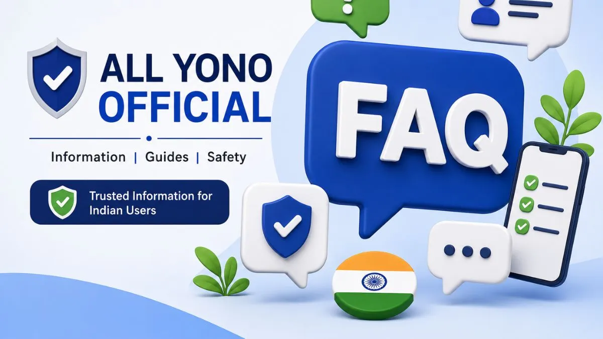

All Yono Official FAQs for Indian Users

Many users search for All Yono Official because they want clear information before opening links, reading app-related details, or checking Android/APK-related topics. This FAQ article is created to answer common user questions in a simple way.
Before anything else, it is important to be clear: All Yono Official is an informational website. It is not a login page. It does not collect user passwords, OTPs, banking details, personal IDs, screenshots, or account records.
This page is for users who want to understand what to check, how to stay careful online, and how to avoid confusing or unsafe links. The answers below are written in a direct and practical way, especially for Indian users who often browse from mobile devices.
What Is All Yono Official?
All Yono Official is an informational website created to help users understand app-related topics, link safety, APK awareness, access reminders, and privacy checks.
It is not a place where users should enter login details. It is not meant to collect private information. The purpose is to provide clear articles that help users read first, check carefully, and avoid unsafe online behavior.
For a wider introduction, users can read the All Yono Official app guide for new users.
Is All Yono Official an App?
No. All Yono Official should be treated as a website, not an application.
Some users may search app-related terms, APK information, or access notes connected to similar names online. That does not mean the website itself is an app or login platform.
The website provides information only. Users should not expect Allyonoofficial.com to handle app login, store user accounts, or manage private access details.
Does Allyonoofficial.com Provide Login?
No. Allyonoofficial.com does not provide login on the website.
Users should not enter OTPs, passwords, personal IDs, bank information, wallet details, or account screenshots on the website. If a page pretending to be related to All Yono Official asks for these details, users should be careful.
A trusted informational website should explain things clearly. It should not pressure users to submit private data.
Does All Yono Official Collect User Details?
No. The website should not be used for submitting private account details.
Users should avoid sharing sensitive information such as OTPs, passwords, Aadhaar details, payment details, mobile wallet information, bank records, private screenshots, or personal IDs on unclear pages.
If any page asks for those details too quickly, that is a warning sign. Users should stop and check the source first.
Why Do Users Search for All Yono Official?
Users may search for All Yono Official for different reasons. Some want basic website information. Some want link safety reminders. Some want to understand APK-related searches. Others may be checking access notes or common questions before continuing.
This is why the website focuses on user-first informational content. The goal is to reduce confusion and help users make safer decisions online.
Most users do not need technical knowledge. They only need simple checks that are easy to follow.
How Can I Check an All Yono Official Link Safely?
Start by checking the full domain name in the browser address bar. Do not rely only on the page title, logo, or button text.
Be careful with shortened links, random forwarded messages, pop-ups, and pages that redirect many times. If a link sends you through several unrelated pages, close it.
Users can read the full safety article here: How to Check an All Yono Official Link Safely.
What Should I Check Before Opening Any Link?
Before opening or using any link, check these points:
| What to Check | Why It Matters |
|---|---|
| Domain name | Helps confirm where the page is hosted |
| Spelling | Similar-looking names can confuse users |
| Redirects | Too many redirects can be unsafe |
| Pop-ups | Forced pop-ups may lead to unrelated pages |
| Page content | A clear page should explain itself |
| Private details | Sensitive information should not be requested too early |
A few seconds of checking can prevent bigger problems later.
What Is APK Information?
APK information refers to Android app file awareness. An APK file can install software on an Android device, so users should be careful before opening one.
All Yono Official may publish informational content about APK safety, but users should understand that APK files should only be handled after checking the source, file name, permissions, and page behavior.
For more details, users can read: All Yono Official APK Information and Safety Checks.
Should I Install APK Files From Random Links?
No. Users should avoid installing APK files from random groups, unknown messages, shortened links, or unclear pages.
A file name can look familiar even when the source is not clear. Before opening any Android file, check where it came from, what the page explains, and what permissions the file may request.
If you are not sure about the source, do not open the file.
What Permissions Should Android Users Check?
Android users should be careful with permissions related to contacts, SMS, storage, camera, microphone, location, phone calls, and notifications.
Not every permission is automatically unsafe, but each permission should make sense. If a permission does not match the expected purpose, pause before allowing it.
Do not tap "Allow" quickly just to continue. Permissions can affect privacy.
Is It Safe to Click Links From WhatsApp or Telegram?
Links from WhatsApp, Telegram, or social media should be checked carefully, especially if they are forwarded or sent by unknown people.
Some shared links may be useful, but others may use familiar names to attract clicks. Always check the full domain before opening files, entering details, or clicking buttons.
Avoid links that use urgent wording or pressure users to act quickly.
What Should I Do If a Page Looks Suspicious?
Close the page. Do not click every button to test it. Do not enter fake details just to see what happens. Do not download files from the page.
After closing it, avoid returning through the same link. Use only clear and trusted paths. If the page opened pop-ups or downloads, check your browser downloads and remove anything you did not intend to save.
If you entered private details on a suspicious page, change related passwords and review your device settings.
Does All Yono Official Ask for OTP?
No. All Yono Official as an informational website should not ask users to submit OTPs.
An OTP should never be shared with another person, unknown page, chat support, comment section, or forwarded link. If any page asks for OTP outside a clear and trusted flow, stop immediately.
OTP safety is one of the most important online habits for Indian users.
Can I Use All Yono Official on Mobile?
Yes, users can read the website on mobile if the site is accessible through a browser.
Since many Indian users browse from Android phones, the site content is written in a mobile-friendly and simple style. Users should still check the domain, avoid random redirects, and avoid saving sensitive details on shared devices.
Mobile users should tap the address bar to see the full URL before trusting a page.
Is It Safe to Use a Referral or Invite Code?
A referral or invite code is just a tracking string on its own — it cannot access your account or device by itself.
The risk comes from what is attached to the code. Be cautious of codes promoted with an upfront "activation fee," or paired with a request for your password, OTP, PIN, or bank details. See the full All Yono Official referral code and invite code safety guide for a complete checklist.
Why Are Safety Articles Important?
Safety articles help users understand what to check before clicking, installing, or sharing information.
Many online issues happen because users move too fast. A safety article reminds users to slow down, check the source, read the page, and protect private details.
The purpose is not to scare users. It is to help them browse with better awareness.
What Is the Best Way to Use This Website?
The best way to use All Yono Official is to read the information first and follow basic safety checks.
Start with the main informational article. Then read the link safety article, APK information article, and login/access notes if needed. Do not treat the website as a login page or app dashboard.
Use it as an information source, not as a place to submit private account details.
Related User Articles
These related articles may help users continue safely:
| Article | What It Helps With |
|---|---|
| All Yono Official App Guide for New Users | Basic website and user information |
| How to Check an All Yono Official Link Safely | Link checking and redirect awareness |
| All Yono Official APK Information and Safety Checks | Android file awareness and APK safety |
| All Yono Official Login Access Notes for New Users | Privacy reminders and login-related awareness |
| Is Yono App Safe? Common Scams and How to Avoid Them | Recognizing common scam patterns |
| Is Rummy Legal in India? Legal Status & Responsible Gaming Guide | Legal status by state and responsible play |
These articles work together to support trust, safety, and better user understanding.
Quick Safety Checklist
Before using any related link or file, remember these points:
| Safety Point | Reminder |
|---|---|
| Check the domain | Make sure the website address is clear |
| Avoid random links | Be careful with forwarded or shortened links |
| Protect OTPs | Never share OTPs with anyone |
| Review permissions | Android permissions should match the purpose |
| Avoid private screenshots | Screenshots may expose sensitive details |
| Read first | A clear page should explain before asking action |
| Stop if unsure | Closing a page is safer than guessing |
This checklist is useful for new users and regular mobile users.
Before You Continue
All Yono Official FAQs are meant to help Indian users understand the website, common safety checks, link awareness, APK-related caution, and privacy reminders.
The most important point is simple: All Yono Official is an informational website. It does not handle login, collect OTPs, store passwords, or request private account records.
Read first, check carefully, and protect your personal details before opening links or files. Read the All Yono Official customer support guide for safer contact checks.
AllYonoOfficial.com does not run or own the apps listed here. The rummy app can be addictive and risky financially, so use them carefully. Only for 18+ people.
Please read our Disclaimer page and the specific disclaimer for each app.
Alert: Online money games, including rummy played for money, are prohibited in India under the Online Gaming Act, 2025. Some download links on this site are referral links.